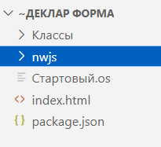

Чтение и запись.
Тип: Строка.
Возвращает или задает путь до файла nw.exe.
По умолчанию программа будет искать файл nw.exe в подкаталоге \nwjs каталога стартового сценария. Вы можете задать значение свойства по своему усмотрению.
Скачать каталог программы со всеми библиотеками вы можете с ресурса NW.js.
Выберите версию для вашей операционной системы. Минимальная версия, на которой будут запускаться декларативные формы - v0.45.6. Она занимает 238 мегабайт. В последующих версиях используется движок браузера Chromium поновее, но и размер каталога увеличится.
Минимальная версия, на которой будут корректно работать все свойства и методы - v0.50.3.
Если у Вас будет несколько приложений на декларативных формах Вы можете ссылаться в каждом из них на один каталог с NW.js через это свойство.
ДФ.nwПуть = "C:\444\~Деклар Форма\nwjs\nw.exe";
Копировать Выделить всёПодключитьВнешнююКомпоненту("C:\444\111\DeclarativeForms\DeclarativeForms\bin\Debug\DeclarativeForms.dll"); ДФ = Новый ДекларативныеФормы(); // === Укажем явно расположение файлов программ. === ДФ.oscriptПуть = "C:\Program Files\OneScript\bin\oscript.exe"; ДФ.nwПуть = "C:\444\~Деклар Форма\nwjs\nw.exe"; // === Сообщить("ДФ.nwПуть = " + ДФ.nwПуть); Форма1 = ДФ.Форма; Форма1.Открыть();